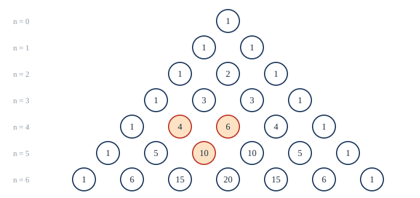
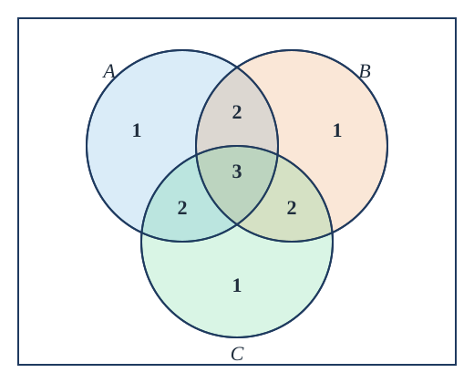

Chapter 7: Counting¶
The sum and product rules, permutations, combinations, pigeonholes and inclusion-exclusion
Learning outcomes
After this chapter you should be able to:
- count with the sum, product, subtraction and division rules, and decide which rule a problem needs;
- count permutations and combinations, with and without repetition, and arrangements of objects that are not all different;
- prove identities about binomial coefficients algebraically and by combinatorial (counting) arguments, and use the binomial theorem;
- apply the pigeonhole principle and its generalised form;
- count with the principle of inclusion-exclusion, including derangements and onto functions.
7.1 The sum and product rules¶
How many passwords can a system accept? How many steps can an algorithm take? How likely is a hand of cards? All of these start by counting the elements of a finite set, usually one far too large to list. Counting rests on two rules.
The product rule
If a task can be done as a sequence of two steps, with \(n_1\) ways to do the first step and, for each of these, \(n_2\) ways to do the second, then the task can be done in \(n_1 n_2\) ways. More generally, a sequence of \(k\) steps with \(n_1, n_2, \dots, n_k\) ways respectively can be done in \(n_1 n_2 \cdots n_k\) ways.
In the language of sets: \(\lvert A_1 \times A_2 \times \dots \times A_k \rvert = \lvert A_1 \rvert \cdot \lvert A_2 \rvert \cdots \lvert A_k \rvert\).
The sum rule
If a task can be done either in one of \(n_1\) ways or in one of \(n_2\) ways, where none of the first ways is also one of the second, then it can be done in \(n_1 + n_2\) ways.
In the language of sets: if \(A_1, \dots, A_k\) are pairwise disjoint, then \(\lvert A_1 \cup \dots \cup A_k \rvert = \lvert A_1 \rvert + \dots + \lvert A_k \rvert\).
Key idea: 'and then' multiplies, 'or' adds
If you build each object by a sequence of choices (first this, and then that), multiply. If you split the objects into separate kinds (this kind or that kind), add.
Example 7.1: Product rule
Problem. (a) How many bit strings of length 8 are there? (b) A vehicle registration code consists of two letters followed by four digits. How many codes are there? (c) How many functions are there from a set with \(m\) elements to a set with \(n\) elements?
Solution. (a) Each of 8 positions has 2 choices: \(2^8 = 256\). (b) \(26 \cdot 26 \cdot 10^4 = 6{,}760{,}000\). (c) Each of the \(m\) elements of the domain chooses its image from \(n\) possibilities: \(n^m\).
Example 7.2: One-to-one functions
Problem. How many one-to-one functions are there from a set with \(m\) elements to a set with \(n\) elements?
Solution. List the domain as \(a_1, \dots, a_m\). The image of \(a_1\) can be any of \(n\) elements; the image of \(a_2\) must differ from it, so \(n - 1\) choices; and so on, until \(a_m\) has \(n - m + 1\) choices. The product rule gives \(n(n-1)\cdots(n-m+1)\), which is \(0\) when \(m > n\) (one factor is zero), as it should be.
Example 7.3: Sum and product together
Problem. A password has 6 to 8 characters, each an uppercase letter or a digit, and must contain at least one digit. How many passwords are there?
Solution. Let \(P_k\) be the number of passwords of length \(k\). By the sum rule the total is \(P_6 + P_7 + P_8\). Counting "at least one digit" directly is awkward, so count all strings of length \(k\) over the 36 symbols and subtract those with no digit: \(P_k = 36^k - 26^k\). So
The trick of counting the complement ("total minus the bad ones") is one of the most useful in counting.
7.2 Subtraction and division¶
When the two kinds of object overlap, the sum rule counts the overlap twice.
The subtraction rule (inclusion-exclusion for two sets)
If a task can be done in \(n_1\) ways or in \(n_2\) ways, and \(n_{12}\) of the ways are common to both, the number of ways is \(n_1 + n_2 - n_{12}\). That is, \(\lvert A \cup B \rvert = \lvert A \rvert + \lvert B \rvert - \lvert A \cap B \rvert\).
Example 7.4: Strings that start or end a certain way
Problem. How many bit strings of length 8 start with 1 or end with 00?
Solution. Starting with 1: \(2^7 = 128\). Ending with 00: \(2^6 = 64\). Both: \(2^5 = 32\). Total \(128 + 64 - 32 = 160\).
When each object has been counted the same number of times, divide.
The division rule
If a procedure produces every object exactly \(d\) times, the number of objects is the number of outcomes of the procedure divided by \(d\).
Example 7.5: Seating round a table
Problem. In how many ways can 6 people sit round a circular table, if two seatings are the same when each person has the same left and right neighbours?
Solution. Seat them in a row in \(6! = 720\) ways and bend the row into a circle. Each circular seating arises from 6 rows (one for each choice of who sits in the "first" seat, by rotating). So there are \(720/6 = 120\) circular seatings. In general \(n\) people can sit round a table in \((n-1)!\) ways.
7.3 Permutations¶
Definition: permutation
A permutation of a set of distinct objects is an ordered arrangement of them. An \(r\)-permutation is an ordered arrangement of \(r\) of them. The number of \(r\)-permutations of \(n\) objects is written \(P(n, r)\).
Theorem 7.1
For \(0 \le r \le n\),
In particular there are \(P(n, n) = n!\) permutations of \(n\) objects.
Proof. The first position can be filled in \(n\) ways, the second in \(n - 1\) ways (any object but the first), and so on; the \(r\)-th in \(n - r + 1\) ways. Apply the product rule. \(\blacksquare\)
Example 7.6: Permutations
Problem. (a) In how many ways can gold, silver and bronze medals be awarded among 10 runners? (b) How many permutations of the letters ABCDEFGH contain the string ABC as a block?
Solution. (a) Order matters, no repeats: \(P(10, 3) = 10 \cdot 9 \cdot 8 = 720\). (b) Glue ABC into one block. Then we are permuting 6 objects: the block, D, E, F, G, H. So \(6! = 720\).
The factorial grows extremely fast: \(10! = 3{,}628{,}800\), and \(20!\) is about \(2.4 \times 10^{18}\). This is why trying every ordering of \(n\) items (for instance, every route through \(n\) cities) is hopeless except for small \(n\).
7.4 Combinations¶
Definition: combination
An \(r\)-combination of a set is an unordered selection of \(r\) of its elements, that is, a subset with \(r\) elements. The number of \(r\)-combinations of an \(n\)-element set is written \(C(n, r)\) or \(\binom{n}{r}\), read "\(n\) choose \(r\)", and called a binomial coefficient.
Theorem 7.2
For \(0 \le r \le n\),
Proof. We count the \(r\)-permutations in two ways. Each \(r\)-permutation is obtained by first choosing which \(r\) elements to use, in \(\binom{n}{r}\) ways, and then arranging them, in \(r!\) ways. So \(P(n, r) = \binom{n}{r} \cdot r!\), and \(\binom{n}{r} = P(n, r)/r! = n!/(r!(n-r)!)\). (This is the division rule: each subset is produced \(r!\) times by the permutations.) \(\blacksquare\)
Order or not?
The most common error in counting is to use permutations when order does not matter, or combinations when it does. Ask: if I rearrange the chosen objects, do I get a different outcome? A committee of 3 is a combination; a president, secretary and treasurer is a permutation.
Example 7.7: Combinations
Problem. (a) How many 5-card hands can be dealt from a standard 52-card deck? (b) How many bit strings of length 10 contain exactly 3 ones? (c) A committee of 5 is chosen from 7 women and 4 men. How many committees have exactly 3 women? How many have at least one man?
Solution.
(a) \(\binom{52}{5} = \dfrac{52 \cdot 51 \cdot 50 \cdot 49 \cdot 48}{5!} = 2{,}598{,}960\).
(b) Choose the 3 positions of the ones: \(\binom{10}{3} = 120\).
(c) Exactly 3 women: choose the women, and then the men: \(\binom{7}{3}\binom{4}{2} = 35 \cdot 6 = 210\). At least one man: all committees minus those with no man, \(\binom{11}{5} - \binom{7}{5} = 462 - 21 = 441\).
Identities and combinatorial proof¶
Since choosing \(r\) elements to take is the same as choosing \(n - r\) elements to leave,
That one-line argument is a combinatorial proof: it shows two expressions are equal by showing they count the same set. The algebraic proof (both are \(n!/(r!(n-r)!)\)) is just as easy here, but for many identities the counting argument is far simpler.
Theorem 7.3 (Pascal's identity)
For \(1 \le k \le n\),
Combinatorial proof. Let \(S\) be a set of \(n + 1\) elements and fix one of them, \(a\). The left side counts the \(k\)-element subsets of \(S\). Each such subset either contains \(a\), in which case it consists of \(a\) and \(k - 1\) of the other \(n\) elements (\(\binom{n}{k-1}\) ways), or does not contain \(a\), in which case it consists of \(k\) of the other \(n\) elements (\(\binom{n}{k}\) ways). By the sum rule the total is the right side. \(\blacksquare\)
Pascal's identity builds Pascal's triangle (Figure 7.1): row \(n\) lists \(\binom{n}{0}, \binom{n}{1}, \dots, \binom{n}{n}\), and each entry is the sum of the two above it.

7.5 The binomial theorem¶
The binomial coefficients get their name from the expansion of a power of a binomial \(x + y\).
Theorem 7.4 (the binomial theorem)
For every natural number \(n\),
Combinatorial proof. Expanding \((x + y)(x + y)\cdots(x + y)\) (\(n\) factors) gives one term for each way of choosing \(x\) or \(y\) from every factor. A term equals \(x^{n-k}y^k\) exactly when \(y\) is chosen from \(k\) of the factors, and there are \(\binom{n}{k}\) ways to choose which \(k\). So the coefficient of \(x^{n-k}y^k\) is \(\binom{n}{k}\). \(\blacksquare\)
Example 7.8: Using the binomial theorem
Problem. (a) Expand \((x + y)^4\). (b) Find the coefficient of \(x^{5}y^{3}\) in \((2x - y)^8\). (c) Show that \(\sum_{k=0}^{n} \binom{n}{k} = 2^n\) and \(\sum_{k=0}^{n} (-1)^k \binom{n}{k} = 0\) for \(n \ge 1\).
Solution.
(a) \((x + y)^4 = x^4 + 4x^3y + 6x^2y^2 + 4xy^3 + y^4\), with the coefficients from row 4 of Pascal's triangle.
(b) The term with \(y^3\) is \(\binom{8}{3}(2x)^5(-y)^3 = 56 \cdot 32 \cdot (-1)\, x^5 y^3\), so the coefficient is \(-1792\).
(c) Put \(x = y = 1\): \(2^n = \sum_k \binom{n}{k}\). (Combinatorially: both sides count all subsets of an \(n\)-element set.) Put \(x = 1\), \(y = -1\): \(0 = (1 - 1)^n = \sum_k (-1)^k \binom{n}{k}\). So an \(n\)-element set with \(n \ge 1\) has as many subsets of even size as of odd size.
7.6 Counting with repetition¶
So far each object could be chosen at most once. Allowing repetition gives two more counts.
Permutations with repetition. The number of sequences of length \(r\) from \(n\) kinds of object, where each kind can be used any number of times, is \(n^r\), by the product rule.
Combinations with repetition. How many ways are there to choose \(r\) objects from \(n\) kinds, when order does not matter and repetition is allowed? For example, how many ways are there to buy 6 pieces of fruit from a stall selling mangoes, bananas and apples?
Theorem 7.5 (stars and bars)
The number of ways to choose \(r\) objects from \(n\) kinds, with repetition allowed and order ignored, is
Equivalently, it is the number of solutions of \(x_1 + x_2 + \dots + x_n = r\) in natural numbers.
Proof. Represent a selection by a row of \(r\) stars and \(n - 1\) bars: the stars before the first bar are the objects of kind 1, those between the first and second bar are of kind 2, and so on. For the fruit, \(\star\star\vert\star\vert\star\star\star\) means 2 mangoes, 1 banana and 3 apples, and \(\vert\star\star\star\star\star\star\vert\) means 6 bananas. Every selection gives exactly one such row and every row gives exactly one selection. A row has \(n + r - 1\) positions, of which we choose the \(n - 1\) for the bars. \(\blacksquare\)
For the fruit, \(n = 3\) and \(r = 6\): \(\binom{8}{2} = 28\) ways.
Example 7.9: Solutions of an equation
Problem. How many solutions does \(x_1 + x_2 + x_3 = 11\) have (a) in natural numbers, (b) in natural numbers with \(x_1 \ge 1\), \(x_2 \ge 2\), \(x_3 \ge 3\)?
Solution. (a) \(\binom{11 + 2}{2} = \binom{13}{2} = 78\). (b) Substitute \(y_1 = x_1 - 1\), \(y_2 = x_2 - 2\), \(y_3 = x_3 - 3\), which are natural numbers with \(y_1 + y_2 + y_3 = 5\): \(\binom{7}{2} = 21\).
Permutations of objects that are not all different. How many different strings can be made by rearranging the letters of MISSISSIPPI? If all 11 letters were different there would be \(11!\) arrangements. But the 4 S's can be permuted among themselves without changing the string, and so can the 4 I's and the 2 P's.
Theorem 7.6
The number of different permutations of \(n\) objects, of which \(n_1\) are of type 1, \(n_2\) of type 2, ..., \(n_k\) of type \(k\) (with \(n_1 + \dots + n_k = n\), objects of the same type indistinguishable), is
Proof. Choose the \(n_1\) positions for type 1 in \(\binom{n}{n_1}\) ways, then \(n_2\) of the remaining positions for type 2 in \(\binom{n - n_1}{n_2}\) ways, and so on. The product telescopes to the formula. \(\blacksquare\)
MISSISSIPPI has 1 M, 4 I's, 4 S's and 2 P's, so it has \(\dfrac{11!}{1!\,4!\,4!\,2!} = 34{,}650\) arrangements.
| Order matters | Order does not matter | |
|---|---|---|
| No repetition | \(P(n, r) = \dfrac{n!}{(n-r)!}\) | \(\dbinom{n}{r} = \dfrac{n!}{r!(n-r)!}\) |
| Repetition allowed | \(n^r\) | \(\dbinom{n+r-1}{r}\) |
Table 7.1. Choosing \(r\) objects from \(n\) kinds.
7.7 The pigeonhole principle¶
If 10 pigeons fly into 9 pigeonholes, some hole holds at least two pigeons. This obvious remark is surprisingly powerful.
The pigeonhole principle
If \(k + 1\) or more objects are placed into \(k\) boxes, at least one box contains two or more objects.
Proof. If every box contained at most one object, there would be at most \(k\) objects. \(\blacksquare\)
Example 7.10: Simple pigeonholes
Problem. (a) Show that among any 367 people, two share a birthday. (b) Show that in any set of 6 integers, two have a difference divisible by 5.
Solution. (a) There are at most 366 possible birthdays. (b) The boxes are the 5 possible remainders on division by 5. With 6 integers, two have the same remainder, and their difference is divisible by 5.
The generalised pigeonhole principle
If \(N\) objects are placed into \(k\) boxes, at least one box contains at least \(\lceil N/k \rceil\) objects.
Proof. If every box contained fewer than \(\lceil N/k \rceil\) objects, that is, at most \(\lceil N/k \rceil - 1\), then the total would be at most \(k(\lceil N/k \rceil - 1) < k\bigl((N/k + 1) - 1\bigr) = N\), using \(\lceil N/k \rceil < N/k + 1\). That contradicts there being \(N\) objects. \(\blacksquare\)
Example 7.11: Generalised pigeonholes
Problem. (a) Among 100 people, at least how many were born in the same month? (b) How many cards must be drawn from a deck to be sure of getting three of the same suit?
Solution. (a) \(\lceil 100/12 \rceil = 9\). (b) With \(N\) cards in 4 suits, some suit has \(\lceil N/4 \rceil\) cards; we need \(\lceil N/4 \rceil \ge 3\), which first holds at \(N = 9\). With 8 cards it is possible to have exactly two of each suit, so 9 is the answer.
The principle often appears where it is not expected. The skill is in choosing the boxes.
Example 7.12: A subtle pigeonhole
Theorem. Among any \(n + 1\) integers chosen from \(\{1, 2, \dots, 2n\}\), one divides another.
Proof. Write each chosen integer as \(2^{e} m\) with \(m\) odd. The odd part \(m\) is one of the \(n\) odd numbers \(1, 3, \dots, 2n - 1\). With \(n + 1\) integers and \(n\) possible odd parts, two of the integers have the same odd part: \(2^{e} m\) and \(2^{f} m\) with, say, \(e < f\). Then the first divides the second. \(\blacksquare\)
Example 7.13: Hashing
A hash table stores records in \(k\) slots, choosing the slot by a function of the record's key. If more than \(k\) records are stored, by the pigeonhole principle two records must share a slot (a collision), however clever the function. Hash tables are therefore designed to handle collisions, not to avoid them.
7.8 Inclusion-exclusion¶
The subtraction rule handles two overlapping sets. For three sets, look at the Venn diagram in Figure 7.2. Adding \(\lvert A \rvert + \lvert B \rvert + \lvert C \rvert\) counts elements in exactly two of the sets twice and those in all three, three times. Subtracting the pairwise intersections corrects the first error but now counts the triple region zero times, so it must be added back:

Theorem 7.7 (the principle of inclusion-exclusion)
For finite sets \(A_1, \dots, A_n\),
Proof. Take an element \(x\) that lies in exactly \(r \ge 1\) of the sets. On the right it is counted \(\binom{r}{1}\) times in the first sum, \(\binom{r}{2}\) times in the second, and so on, so in total
by Example 7.8(c). So every element of the union is counted exactly once, and elements outside the union are not counted at all. \(\blacksquare\)
Example 7.14: Divisibility
Problem. How many integers from 1 to 1000 are divisible by 3, 5 or 7?
Solution. Let \(A_3, A_5, A_7\) be the multiples of 3, 5, 7 in the range. The number of multiples of \(d\) from 1 to 1000 is \(\lfloor 1000/d \rfloor\), and a number is divisible by both 3 and 5 exactly when it is divisible by 15.
(The numbers are \(\lfloor 1000/3 \rfloor\), \(\lfloor 1000/5 \rfloor\), \(\lfloor 1000/7 \rfloor\), \(\lfloor 1000/15 \rfloor\), \(\lfloor 1000/21 \rfloor\), \(\lfloor 1000/35 \rfloor\), \(\lfloor 1000/105 \rfloor\).) So \(1000 - 543 = 457\) of them are divisible by none of 3, 5, 7.
Onto functions¶
Example 7.15: Counting onto functions
Problem. How many onto functions are there from a set with 6 elements to a set with 3 elements \(\{b_1, b_2, b_3\}\)?
Solution. There are \(3^6\) functions in all. Let \(A_i\) be the functions that miss \(b_i\). A function in \(A_i\) maps into the other two elements: \(\lvert A_i \rvert = 2^6\). A function in \(A_i \cap A_j\) maps everything to the remaining element: \(1^6\). No function misses all three. So the number of functions that miss something is \(3 \cdot 2^6 - 3 \cdot 1^6 = 189\), and the number of onto functions is \(729 - 189 = 540\).
In general the number of onto functions from an \(m\)-set to an \(n\)-set is \(\sum_{k=0}^{n} (-1)^k \binom{n}{k}(n-k)^m\).
Derangements¶
A derangement is a permutation that leaves no object in its original place. If \(n\) people leave their coats at a cloakroom and the coats are handed back at random, a derangement is an outcome in which nobody gets their own coat.
Theorem 7.8
The number of derangements of \(n\) objects is
Proof. Let \(A_i\) be the set of permutations that fix object \(i\). A permutation fixing \(k\) chosen objects permutes the other \(n - k\) freely, so the intersection of any \(k\) of the \(A_i\) has \((n-k)!\) elements, and there are \(\binom{n}{k}\) such intersections. By inclusion-exclusion, the number of permutations fixing at least one object is \(\sum_{k=1}^{n} (-1)^{k+1}\binom{n}{k}(n-k)!\). Since \(\binom{n}{k}(n-k)! = n!/k!\),
The first values are \(D_1 = 0\), \(D_2 = 1\), \(D_3 = 2\), \(D_4 = 9\), \(D_5 = 44\), \(D_6 = 265\). The bracket in the formula is the beginning of the series for \(e^{-1}\), so for large \(n\) the fraction of permutations that are derangements is very close to \(1/e \approx 0.368\), whatever \(n\) is.
7.9 Summary¶
Summary
- Product rule: a sequence of choices multiplies. Sum rule: disjoint alternatives add. Count the complement when "at least one" makes direct counting awkward.
- Subtraction rule: \(\lvert A \cup B \rvert = \lvert A \rvert + \lvert B \rvert - \lvert A \cap B \rvert\). Division rule: if every object is produced \(d\) times, divide by \(d\).
- \(P(n, r) = n!/(n-r)!\) ordered selections; \(\binom{n}{r} = n!/(r!(n-r)!)\) unordered selections. With repetition: \(n^r\) and \(\binom{n+r-1}{r}\).
- Arrangements of \(n\) objects with \(n_i\) of type \(i\): \(n!/(n_1! \cdots n_k!)\).
- Pascal's identity and the binomial theorem \((x+y)^n = \sum \binom{n}{k}x^{n-k}y^k\). A combinatorial proof counts one set in two ways.
- Pigeonhole: \(N\) objects in \(k\) boxes put at least \(\lceil N/k \rceil\) in some box.
- Inclusion-exclusion alternately adds and subtracts the sizes of intersections; it counts onto functions and derangements, and \(D_n/n! \to 1/e\).
7.10 Exercises¶
Exercise 1
How many strings of 4 decimal digits (a) have no repeated digit, (b) end with an even digit, (c) contain at least one 7?
Answer
(a) \(10 \cdot 9 \cdot 8 \cdot 7 = 5040\). (b) \(10^3 \cdot 5 = 5000\). (c) \(10^4 - 9^4 = 10000 - 6561 = 3439\).
Exercise 2
How many bit strings of length 10 have at least 3 ones?
Answer
All strings minus those with 0, 1 or 2 ones: \(2^{10} - \binom{10}{0} - \binom{10}{1} - \binom{10}{2} = 1024 - 1 - 10 - 45 = 968\).
Exercise 3
In how many ways can 8 people be seated in a row if two particular people must sit next to each other? If they must not?
Answer
Together: treat the pair as a block, \(7!\) arrangements of 7 units, times 2 orders within the block: \(2 \cdot 5040 = 10080\). Apart: \(8! - 10080 = 40320 - 10080 = 30240\).
Exercise 4
Give a combinatorial proof that \(\sum_{k=0}^{n} \binom{n}{k}^2 = \binom{2n}{n}\). (Hint: \(\binom{n}{k} = \binom{n}{n-k}\); choose a committee of \(n\) from \(n\) women and \(n\) men.)
Answer
The right side counts committees of \(n\) from \(n\) women and \(n\) men. Classify by the number \(k\) of women: choose \(k\) women in \(\binom{n}{k}\) ways and \(n - k\) men in \(\binom{n}{n-k} = \binom{n}{k}\) ways. Summing over \(k\) gives the left side. \(\blacksquare\)
Exercise 5
Find the coefficient of \(x^7\) in \((1 + x)^{11}\), and of \(x^2y^3z\) in \((x + y + z)^6\).
Answer
\(\binom{11}{7} = 330\). For three terms, choose which 2 factors give \(x\), which 3 give \(y\) and which 1 gives \(z\): \(\dfrac{6!}{2!\,3!\,1!} = 60\).
Exercise 6
How many ways are there to put 10 identical balls into 4 distinct boxes? If each box must get at least one ball?
Answer
\(\binom{10 + 3}{3} = \binom{13}{3} = 286\). With at least one each, first put one in each box, then distribute the other 6: \(\binom{6 + 3}{3} = 84\).
Exercise 7
How many different strings can be made from the letters of BANANA?
Answer
6 letters: 1 B, 3 A's, 2 N's: \(\dfrac{6!}{1!\,3!\,2!} = 60\).
Exercise 8
Show that if 5 points are chosen in a square of side 2, two of them are at distance at most \(\sqrt{2}\).
Answer
Divide the square into four unit squares. By the pigeonhole principle two of the 5 points lie in the same unit square (points on a shared edge may be assigned to either), and two points in a unit square are at most its diagonal \(\sqrt{2}\) apart. \(\blacksquare\)
Exercise 9
How many integers from 1 to 100 are not divisible by 2, 3 or 5?
Answer
Divisible by at least one: \(50 + 33 + 20 - 16 - 10 - 6 + 3 = 74\). So \(100 - 74 = 26\) are divisible by none.
Exercise 10
Five letters are put at random into five addressed envelopes. How many ways leave every letter in a wrong envelope? What fraction of all ways is that?
Answer
\(D_5 = 44\) of \(5! = 120\), a fraction \(44/120 \approx 0.367\), already very close to \(1/e\).
7.11 Quiz¶
Check your understanding of counting
Exercise 1
How many bit strings of length 6 are there?
Answer
64
Exercise 2
In how many ways can first, second and third prizes go to 3 of 8 contestants?
Answer
336
Exercise 3
How many 3-element subsets does a 7-element set have?
Answer
35
Exercise 4
Choosing 5 cards for a poker hand is counted with
- permutations
- combinations
- the product rule n to the power r
- derangements
Answer
combinations
Exercise 5
At least how many people must be in a room to be sure that two were born in the same month?
Answer
13
Exercise 6
How many ways are there to choose 4 pieces of fruit from 3 kinds, with repetition allowed and order ignored?
Answer
15
Exercise 7
How many derangements of 4 objects are there?
Answer
9